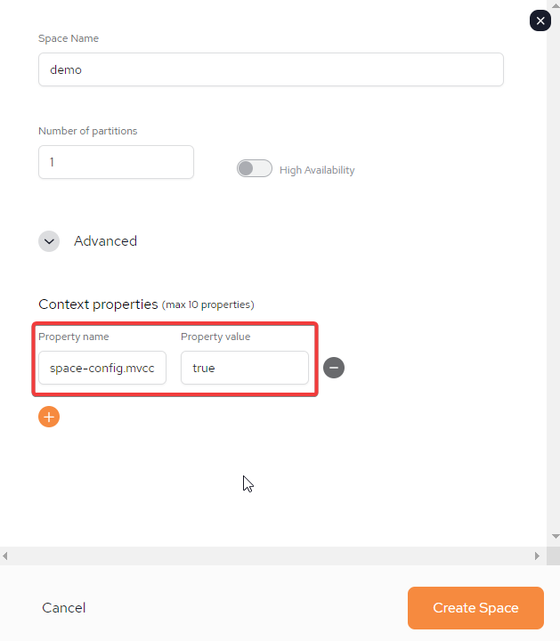

or without CDC?
Both full batch and incremental batch loads can now be performed as a "pull" functionality without requiring the use of "push" functionality used by a typical IIDR deployment.
The performance level will be 14K records per second.
Can be managed by SpaceDeck or via REST API.
Currently,
Oracle
MSSQL
DB2 Z/OS
DB2 AS-400
DB2 LUW
The following load types are supported:
Full load
Incremental load base on certain fields, or combination of fields
Batch Load cannot be configured for a pipeline that is configured and running with CDC (IIDR). To enable Batch Load a new pipeline has to be created.
Define Oracle as the Data Source with the connector type = batchload.
Create new pipeline and choose pipeline type full batch load
Choose table from available list (TABLE1 for example)
Add table to the pipeline
Save the pipeline
Start the pipeline
Full batch load ends after the full load is completed. The status should be Finished Successfully. This differs from a CDC pipeline.
Define MSSQL as the Data Source
Create new pipeline and choose pipeline type incremental batch load
Choose table from available list (TABLE1 for example)
Define Base columns and PK column from a list of available columns
Add table to the pipeline
Save the pipeline
Start the pipeline
Base columns or PK columns can be a group of columns.
Incremental batch load pipeline ends after it is completed. The status should be Finished Successfully. This differs from a CDC pipeline.
Define DB2 AS/400 as the Data Source
Create new pipeline and choose pipeline type full batch load
Choose table from available list (TABLE1 for example)
Define Exclude/Include columns (if needed) from the COLUMNS list of the TABLE1
Define FILTER (if needed) on a TABLE1 in the form of a WHERE clause
Add table to the pipeline
Save the pipeline
Start the pipeline
Batch Load cannot be configured for a pipeline that is configured and running with CDC (IIDR). To enable Batch Load a new pipeline has to be created.
To use Batch load when creating a Pipeline, perform the following steps:
Add a new Pipeline by following steps as outlined in the User Guide: SpaceDeck - Spaces - Adding a Pipeline
In the Adding a New Space Parameters section, to select full or partial batch load, select......

SpaceDeck?